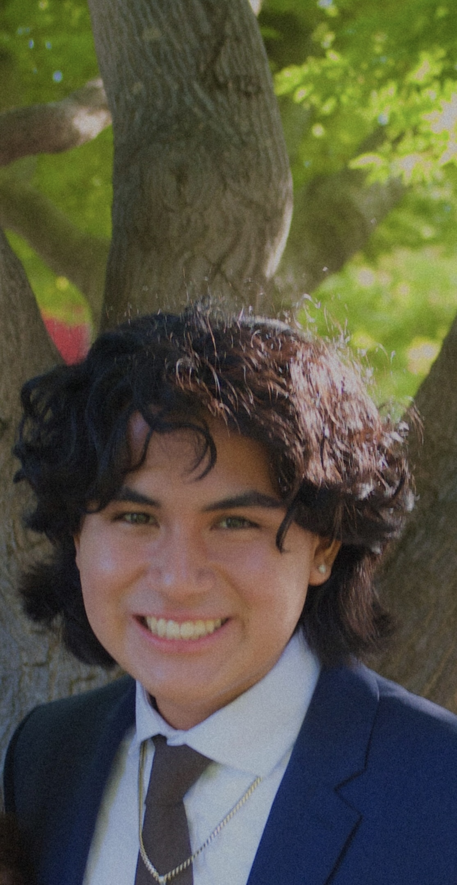

HELLO WORLD!

Introduction:
My name is Joaquin Arredondo and I am a 2nd year Computer Science student. I am from the Bay Area more specifically East Bay (I live in Newark, but since most people don't know where that is I just say Fremont / Union City / Hayward). I like doing digital art on Procreate, I like singing and did acapella for 4 years in high school and did the choir program here at Cal Poly, Polyphonics for about a year, my favorite show is Avatar the Last Airbender, and I'm a part of the engineering fraternity Sigma Phi Delta.